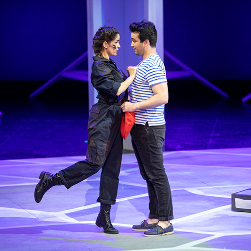
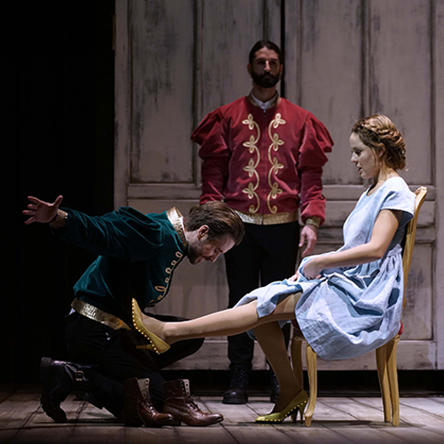
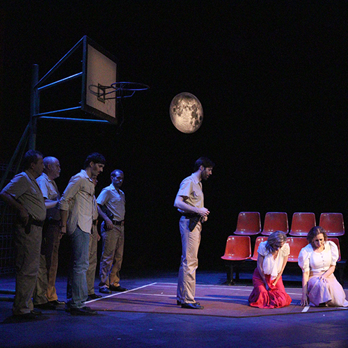
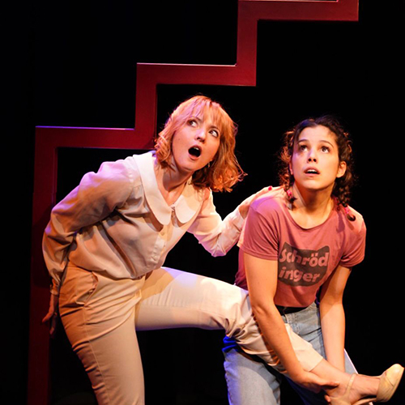

Raquel Porter
|
Diseño de vestuario
Inicio
Bio
Artes Escénicas
Audiovisuales
Moda
Contacto

La Fille du Régiment
Ópera - Kursaal de San Sebastián

Cendrillon
Ópera - Teatro Real de Madrid

La Araucana
Ópera de cámara - Teatro Principal de Zamora

El Hueco
Teatros Luchana
Il Re Pastore
Teatro Victoria Eugenia de San Sebastián
Vestuario para Coro Sinan Kay
Coro Sinan Kay